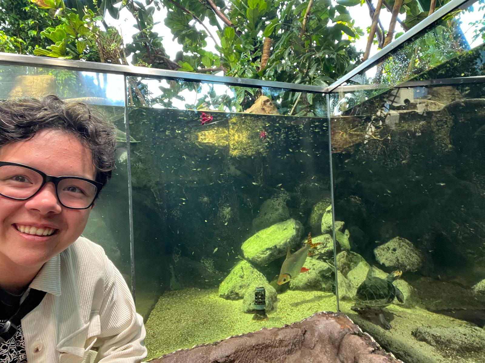
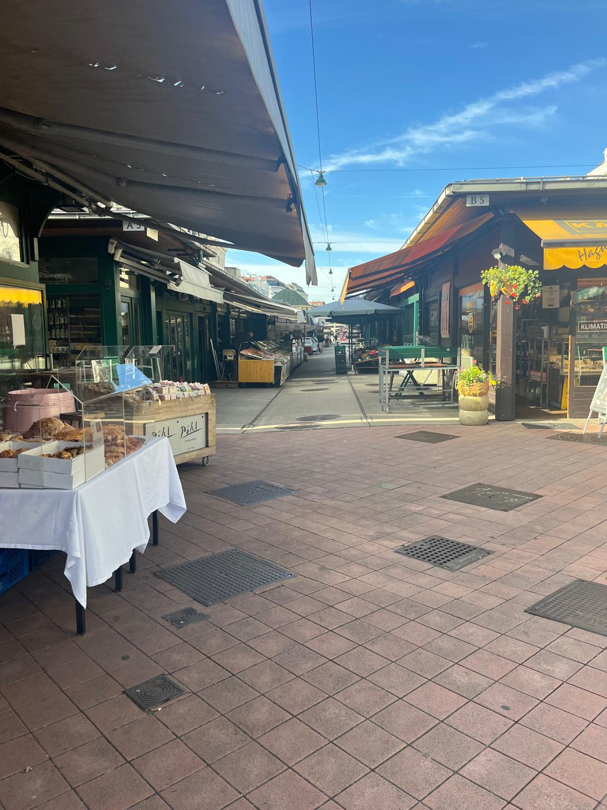
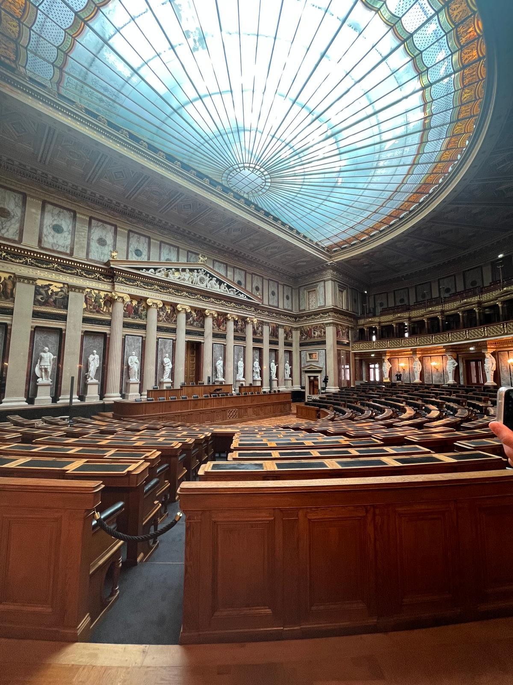
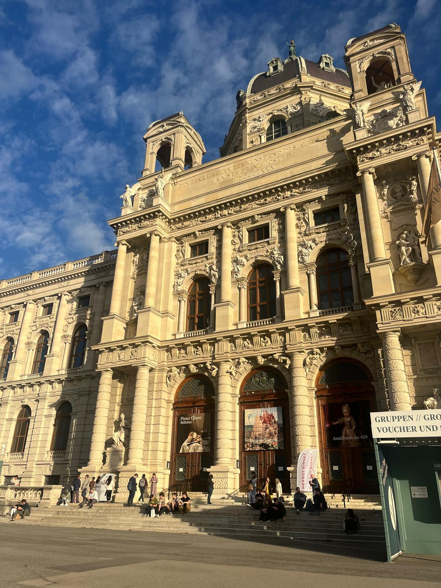
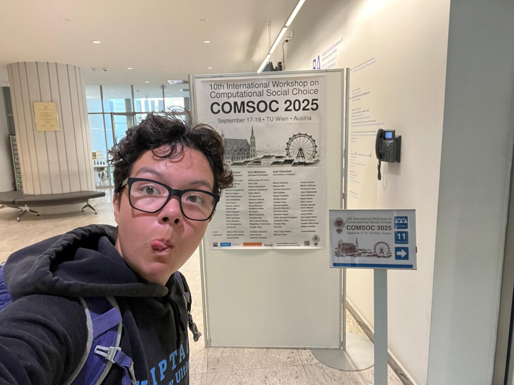
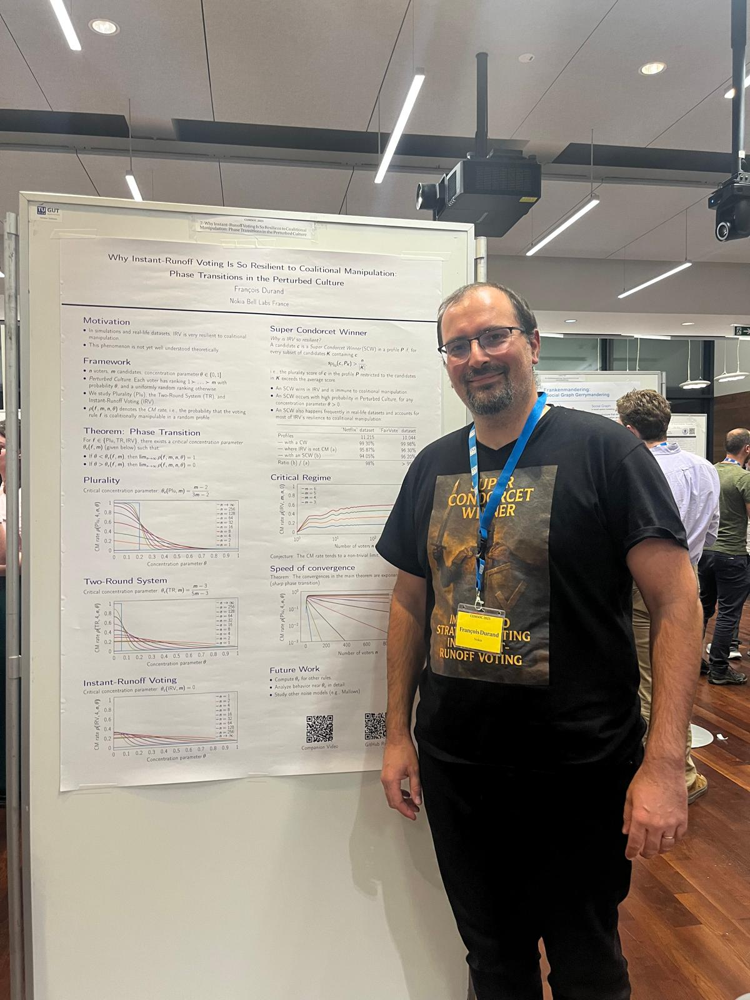
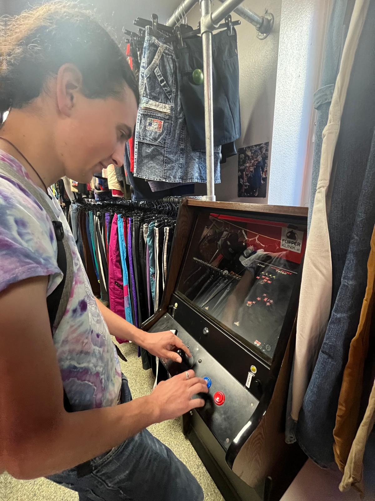
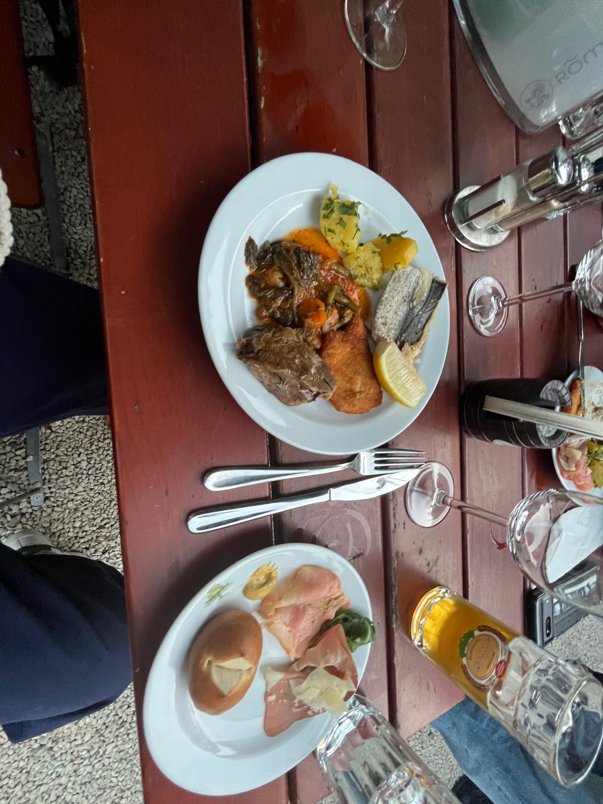
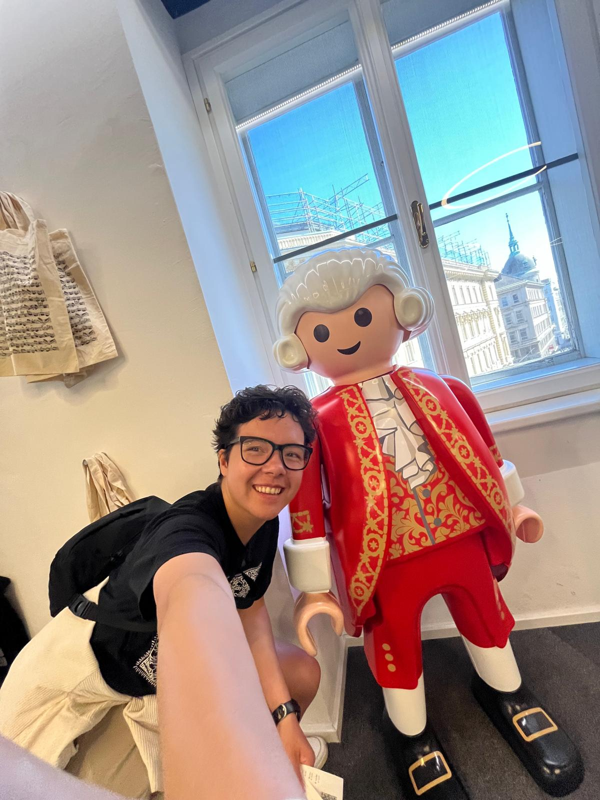
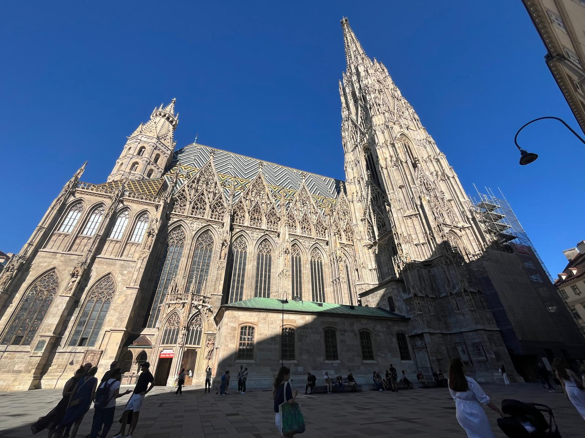

Reccomended by Moon: Haus de Meeres an aquarium with a turtle

Walking through naschmarkt

Vienna Parliament Hal

They were all very grand and spectacular. There was a lot of gold and decorations.

Selfie when I arrived to the conference
Overview of September 14th - September 21st, 2025: Conference in Vienna & other adventures!
Main theme of the week: Social choices are rarely deterministic
Biggest highlight: Visiting vienna and learning about comsoc! (computation social choice)
Biggest challenge: Unfamiliarity with Vienna and foot pain
More detailed thoughts
September 17th - I fly to Vienna, Austria for a Computation Social Choice conference that Moon Duchin (my PI from the summer) is a keynote speaker for. I am also just interested in this area of math/public policy, so I thought that this conference would be a worthwhile opportunity and I did quite enjoy my time.
September 19th - I get dinner with my high school friend Micah who is studying abroad in Vienna and play board games with them in a cafe until midnight
September 20th - Museum day, but a Vienna version. I take up my PI’s advice to visit a German munition tower turned into an aquarium: Haus de Meeres. That was really cool and I was glad to visit an aquarium. I also enjoyed the Haus de musik. I did a lot, but I quite enjoyed my time trying to hit many touristy spots. Because I fully embraced my solo traveling tourist attitude, I had a lot of fun because I had low expectations. This is something I want to carry with me here in Copenhagen.
September 21st - Happy 21st to me :)) Also, I played in a frisbee tournament with Hucks! My play got significantly better throughout the day as I remembered to use my dumps instead of trying to be a hero. Also, we went to Ramen Hokkaido after which was so nice to celebrate the tournament and because my fridge was empty. I got a smattering of birthday wishes throughout the day which was also lovely.
Quick Stats
Talks listened to : 25!
Places visited: Vienna, Gugg, another queer bar, and a few more museums
Favorite food: Dinner at Stokl im
Shout out to the very nice shop merchants whom I bartered with.

Poster on why STV is more resistant to strategy voting.

Vienna with Micah playing a game in a thrift store

Stockl Im Dinner

Mozart Lego Statue in Vienna

I had to get a photo at the famous St. Peters Church, although I do enjoy the quieter parts of the city.